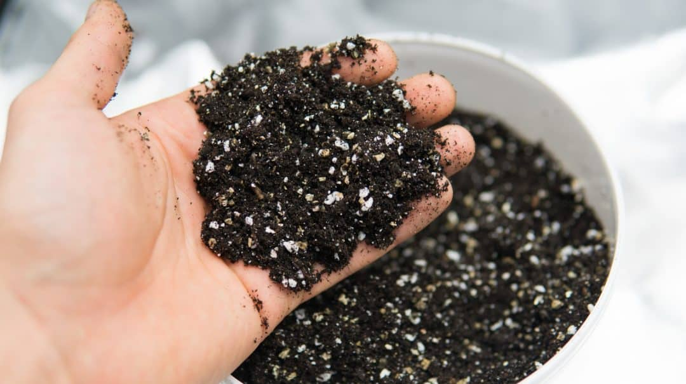

A preparação garante boa qualidade e desenvolvimento da cultura. Os materiais utilizados no substrato irão nutrir, suportar e possivelmente prevenir ataque de doenças e insetos.
Como desenvolver
.jpeg)
Materiais Necessários
-
Terra comum: Serve como base.
-
Areia: Melhora a drenagem.
-
Turfa ou fibra de coco: Retém umidade e fornece nutrientes.
-
Composto orgânico: Enriquece o substrato com nutrientes.
-
Perlite ou vermiculita: Aumenta a aeração e a drenagem.
Proporções Básicas:
-
Terra comum: 40%
-
Areia: 20%
-
Turfa ou fibra de coco: 30%
-
Composto orgânico: 10%

Passo a Passo:
-
Misturar os ingredientes: Em um recipiente grande, adicione as quantidades corretas de cada componente.
-
Misturar bem: Use uma pá ou enxada para misturar tudo até que fique homogêneo.
-
Verificar a umidade: O substrato deve estar levemente úmido, mas não encharcado.
-
Testar a drenagem: Faça um teste com água; se drenar rapidamente, está bom. Se acumular água, adicione mais areia ou perlite.
-
Armazenar: Guarde em um local seco até o uso.
Dicas Extras:
-
pH do substrato: Muitas plantas preferem um pH entre 6 e 7. Teste e ajuste se necessário.
-
Personalize conforme as plantas: Algumas plantas podem ter necessidades específicas, ajuste as proporções conforme necessário.